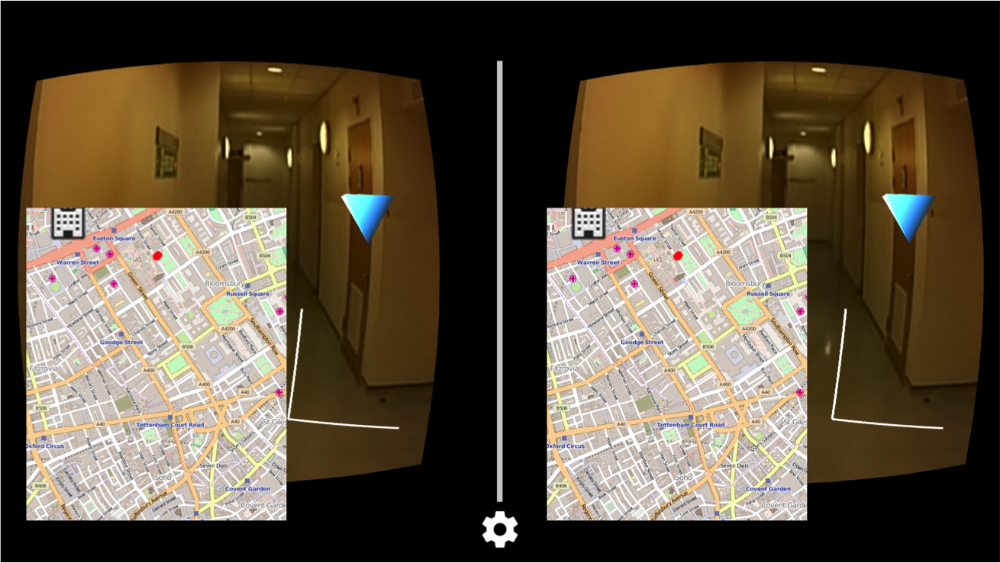

Google meets Medecins Sans Frontieres: An augmented reality experience for data collection on the field.
The System Framework

This is the structure for our application. While the drone is in flight, the sensors and camera record data and video footage that are sent to the laptop (back-end), which acts as a server hub, and the phone (front-end). The application is running on an Android phone in the Google Cardboard.
On the phone:
- Render graphs using incoming sensor data
- Display video from incoming camera footage
- Display a map of the location of drones
- Include the closest points of interest on the map
On the laptop:
- Acts as the server for the transfer of data from the drone
- Transfer the data to the running application on the phone
- Has potential for further video analysis
System Prototypes
Architecture Protoypes
We explored multiple options for drones, notably the Hubsan drone.

Advantages of this prototype:
- The Hubsan x4 is small, extremely light-weight, therefore very easy to carry
- It is equipped with an HD Camera
- Can be sent out fast, no prior set up needed
- Useful when a fast analysis of the area is needed
Disadvantages:
- Sensors cannot be attached
- Video quality will be affected if live streaming directly from drone

Advantages:
- The Phantom is a robust drone
- It can be equipped with sensors and a camera
- It can be equipped with a system to transfer data to a back-end
Disadvantages:
- Inconvenient to carry due to it's bulkier size and weight
- Video quality will be affected if live streaming directly from drone
Video footage from the drone:
User Interface Testing and Trials
Throughout the project, we have updated the UI following our user testing. Previously, the UI was formed of several ‘boxes’ or ‘GUIs’ (Graphics User Interfaces) which hover in front of the user in 3D polar space. Each of these GUIs rendered a graph, video, or any other methods for displaying data in a visual manner. The spherical placement of the GUIs meant that, whenever one is looked at directly, it will not be distorted, and instead will appear almost 2D to the user. This allowed the user to fully focus on the data represented. If need be, the user may pull the trigger, which will magnify the GUI.
This was uncomfortable for the user to use over a long period of time, so we updated it to display the video footage in the background, with the graphs overlayed on top. We have also added a map of the area, and overlayed the video footage with a marker to indicate the nearest landmark.
User Testing
Below are the initial diagram prototypes of UI designs. After conduting multiple user tests we concluded that graphs 1 and 3 were best.
Prototypes

Results

UI Design Prototype 1
For our first prototype, we implemented design 1. The components, ie the graphs and the video, are elements that can be zoomed in and out off. Head rotation allows the user to view different content.
UI Final Design
After testing and feedback, we came up with this final interface. It has the video running in the background, with a map view on the lower left handside and the graphs overlayed on the video. With head movements, the user rotates the camera on the drone.
Materials and References
The Google Cardboard SDK for Android allowed us to render an Android application for viewing with the Google Cardboard.
Treasure Hunt Demo AppThe Treasure Hunt demo app for the Google Cardboard. This was used as a starter base and inspiration for creating the app.
BlueCove LibraryThe BlueCove library allowed us to use Bluetooth in Java. This was important as the server was required to connect to the Android application via Bluetooth.
jSerialComm LibraryThe jSerialComm library allowed us to connect to serial ports, such as USB, in Java. This was needed in order to read and write data from and to the JeeLink.
JeeLib LibraryThe JeeLib library is a wrapper library containing several useful smaller libraries. In particular, it contains the RF12 library, which allowed us to send data over a radio frequency.
Servo Arduino LibraryThe Servo library is an Ardunio library that allows control over servo motors. This was useful for controlling the Gimbal, which met the requirements.
Osm-droid LibraryThe library for OpenStreetMap as an Android map view. It allowed us to render markers and location given OpenStreetMap data.
Glossary
An application (app) is a program that is running on the mobile phone. It is programmed in Android.
AndroidThis is the operating system the mobile phone uses. It is also the name of the programming language used for our mobile phone application. The language is based on Java.
DHT SensorThe Digital Humidity Temperature (DHT) sensor is a sensor which can read humidity and temperature. In our project, we use the Keyes DHT sensor, which uses an analog output, and +3v and GND.
JeeLinkThe JeeLink is an Arduino-based circuit board. It has a radio antenna, and a male USB port. This allows it to communicate with the JeeNode and a computer, respectively. Programs written for this are in the Arduino C/C++ language.
JeeNodeThe JeeNode is an Ardunio-based circuit board. It has a radio antenna, a female Micro USB port, and four ports, each having a selection of analog pins, digital pins, power, etc. The JeeNode is able to communicate with the JeeLink via a radio frequency. Sensors and the gimbal are attached to the JeeNode via the ports provided. Programs written for this are in the Arduino C/C++ language.
GimbalThe Gimbal is a device which is able to rotate through several degrees of freedom. The FatShark Gimbal, which is used in our project, is able to rotate in both the pitch and yaw directions.
ServerIn our project, the server is a program which runs on a computer. It connects to the JeeNode and the mobile phone via USB and Bluetooth, respectively. The server reads and writes data from and to both connections in order to transmit data. It is written in Java.
CardboardA low cost Virtual Reality headset developed by Google for use with Android phones.
Virtual RealityA way for a computer to generate a virtual environment for a user to interact with, usually by the production of an image per eye which is mounted on the user’s head to give full immersion to the user.
OpenGLThe Open Graphics Library provides a cross platform way to create graphics in an application.